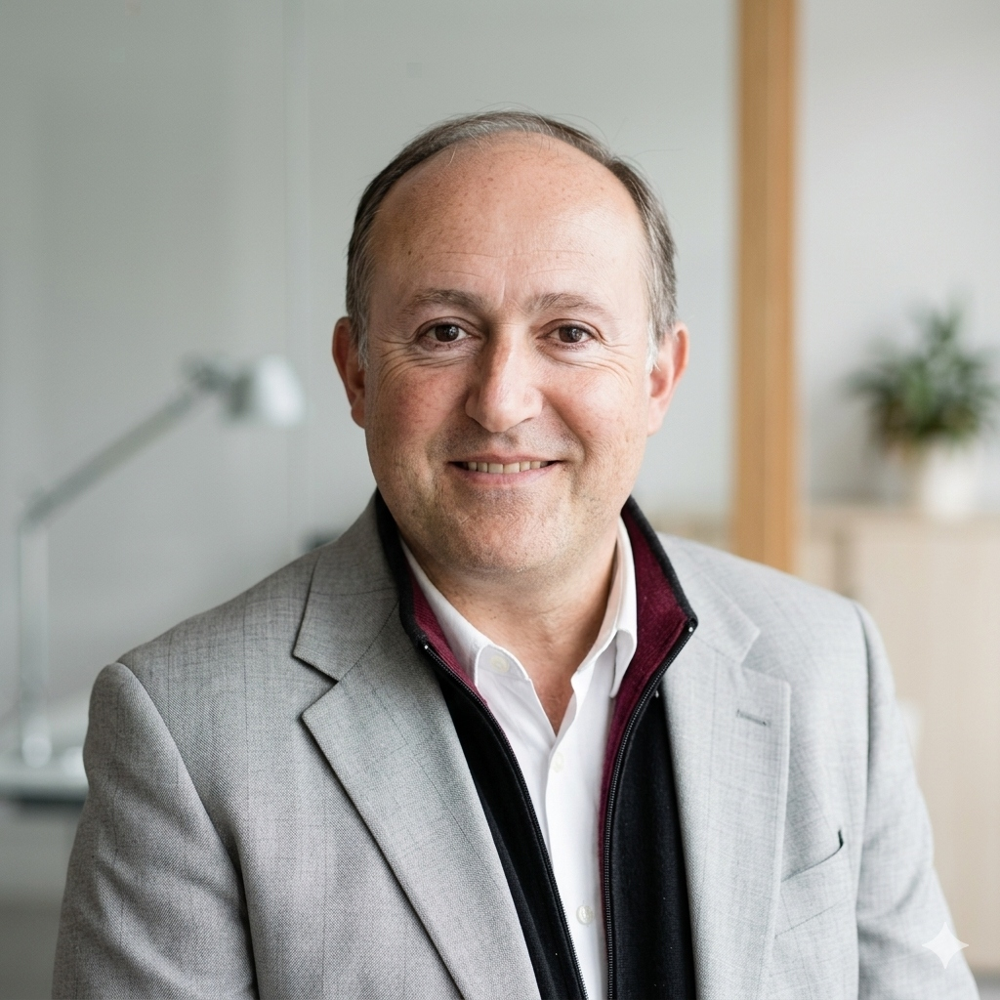
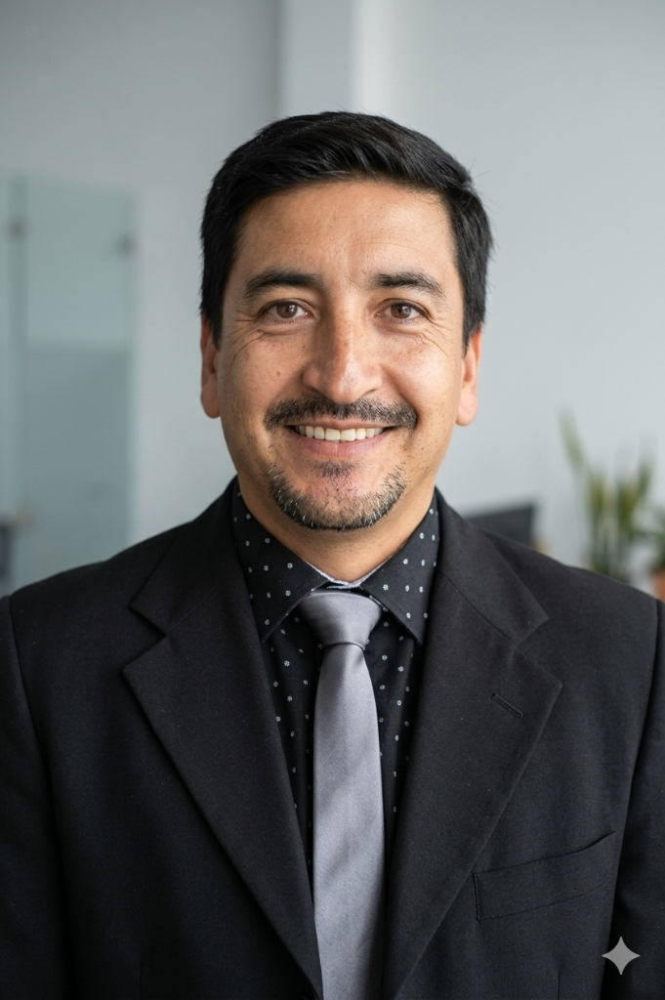
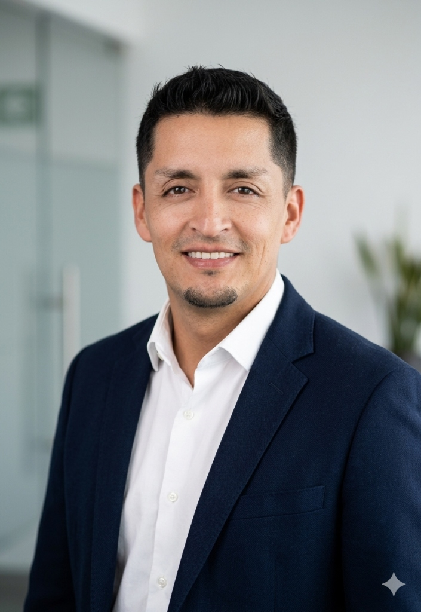
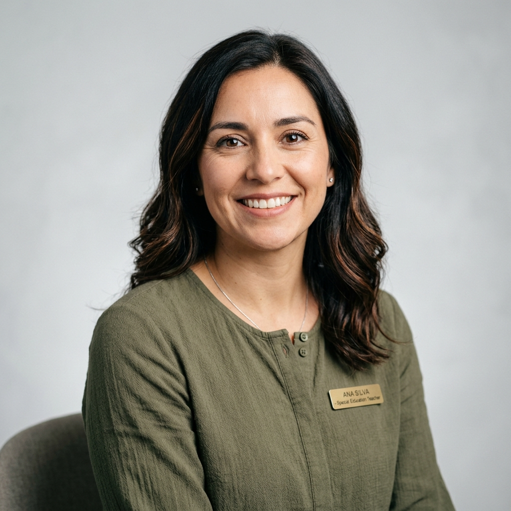

Las personas detrás de Yuntagape
Conoce a quienes hacen posible nuestra misión: profesionales comprometidos con el desarrollo integral de niños, niñas y sus familias.

Padre Eduardo Rodríguez Yunta
Sacerdote Misionero · Doctor en Biología (Genética)
Con una trayectoria única que une la ciencia de vanguardia y la vocación misionera, el Padre Eduardo fundó Yuntagape con el propósito de integrar el conocimiento académico con el acompañamiento humano y espiritual en los momentos de mayor vulnerabilidad.
Su perfil combina un profundo rigor científico, con un Doctorado en Genética por la Universidad de Nueva York, y una extensa labor pastoral como Sacerdote Diocesano. Como investigador en instituciones como el Sloan Kettering de Nueva York y profesor en las principales universidades de Chile, ha dedicado gran parte de su vida al estudio de la genética del cáncer y la bioética clínica.
A través de más de 70 publicaciones y una decena de libros, el Padre Eduardo ha explorado la intersección entre la ética de la investigación, la espiritualidad y la dignidad humana. Su experiencia como capellán en centros de cáncer le permitió comprender que el apoyo técnico es fundamental, pero insuficiente si no va de la mano de un sentido profundo de comunidad.
Inspirado por la palabra quechua "Yuntagape" —que evoca la unión y el trabajo colaborativo—, creó esta fundación como un puente donde la ciencia, la ética y la fe se unen para ofrecer una respuesta integral a quienes más lo necesitan.
menu_book Publicaciones y Producción Científica del Padre Eduardo
Directorio de la Fundación
Profesionales con amplia experiencia que guían la dirección estratégica de nuestra institución.

Francisco Flores Guerrero
Presidente del Directorio
Profesor de Educación General Básica y Ciencias Naturales. Magíster en Dirección y Liderazgo para la Gestión Educacional.
Mirza Órdenes Moraga
Encargada de Finanzas
Contador Auditor con +30 años de experiencia en administración, control financiero y cumplimiento tributario en el sector privado.

Alexis Aravena Rojas
Vicepresidente
Psicopedagogo y Educador Diferencial, mención trastornos del lenguaje y la comunicación oral, Trastorno del Espectro Autista.
Nuestro Equipo de Profesionales
Un equipo multidisciplinario que trabaja día a día para brindar atención de calidad a quienes más lo necesitan.
Camila Belén Torres
Psicóloga Infantil
Especialista en evaluación e intervención psicológica con enfoque en TEA.
Loren Isle Fuentes
Analista de Servicios Sociales
Certificación Ley Karin.
Francisca Ignacia Muñoz
Terapeuta Ocupacional
Especialista en integración sensorial y autonomía funcional infantil.

Andrea Sofía Pizarro
Educadora Diferencial
Adaptaciones curriculares e inclusión educativa para cada estudiante.
¿Quieres ser parte de nuestro equipo?
Buscamos profesionales comprometidos con el bienestar infantil. Únete a nuestra misión.
Contáctanos